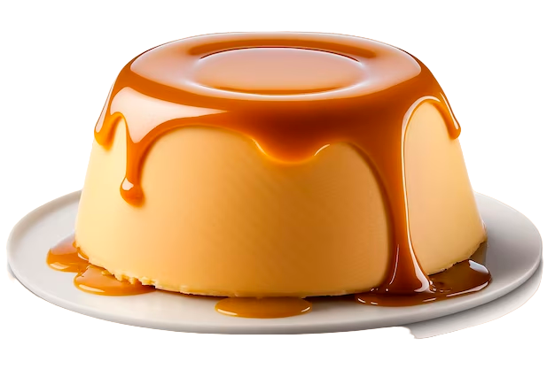

Pudim delicioso
Veja como fazer essa receita de pudim de leite condensado lisinho e com uma calda perfeita de caramelo. Ele é delicioso, barato e bem rápido de preparar! Com sua textura macia e sabor inconfundível, esse doce é uma verdadeira tentação para os amantes de sobremesas tradicionais. Fácil de preparar e com ingredientes simples, o pudim é uma opção perfeita para adoçar qualquer ocasião especial.
Modo de preparo
Ingredientes:- 6 colheres de sopa de açúcar
- 100g de manteiga
- 1 lata de leite condensado
- 1 lata de leite, use a mesma medida do leite condensado
- 3 ovos
- 1 colher de sopa de gelatina em pó incolor
- 1 xícara de morangos picados
- 1 xícara de mirtilos
- Em uma panela de fundo largo, derreta o açúcar até ficar dourado.
- Junte a água quente e mexa com uma colher.
- Deixe ferver até dissolver os torrões de açúcar e a calda engrossar.
- Forre com a calda uma forma com furo central (19 cm de diâmetro) e reserve.